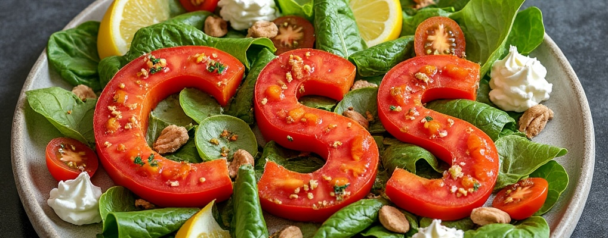

< Back
CSS Caesar Salad

Description
Just like CSS adds style to HTML, this Caesar salad brings flair to your meal.
It's easy to prepare but can be customized with different toppings or dressings,
reflecting the customization CSS brings to web pages.
Ingredients
- Romaine Lettuce - The base, much like the body of a webpage.
- Croutons - Adds texture, think of them as div elements for structure.
- Parmesan Cheese - Grated finely, like styling with font-family for flavor.
- Chicken (optional) - For those who like their salad with some content inside.
- Caesar Dressing - The style that ties everything together.
- Anchovy Fillets or Paste - A subtle background flavor, like background-color.
- Lemon Juice - A touch of zesty color to brighten up the dish.
- Worcestershire Sauce - A dash of complexity, like box-shadow for depth.
- Garlic - Minced finely, adding flavor to the dressing, akin to font-size in CSS.
- Olive Oil - For smoothness in the dressing, like transition for smooth changes.
Steps
- Prepare the Salad Base
- Wash and dry your romaine lettuce, then tear or cut into bite-sized pieces. This is your main content.
- Make the Dressing
Combine in a bowl:
- 1 minced garlic clove,
- 2-3 anchovy fillets or 1-2 teaspoons of anchovy paste,
- Juice of half a lemon,
- 1 teaspoon Worcestershire sauce,
- Salt and pepper to taste,
- 1/4 cup olive oil.
Mix well until you have a smooth dressing, like refining your CSS properties.
- Toss Together
- In a large salad bowl, toss the romaine with the dressing, ensuring even coverage, similar to applying styles uniformly.
- Add croutons for crunch, like adding margin or padding for spacing.
- Add Finishing Touches
- Shave or grate Parmesan cheese over the top, just like you would add a border or outline.
- If using, slice or grill chicken and place on top for added substance.
- Serve
- Serve immediately to keep everything crisp and fresh, like ensuring your webpage loads quickly and looks good on all devices.
< Back